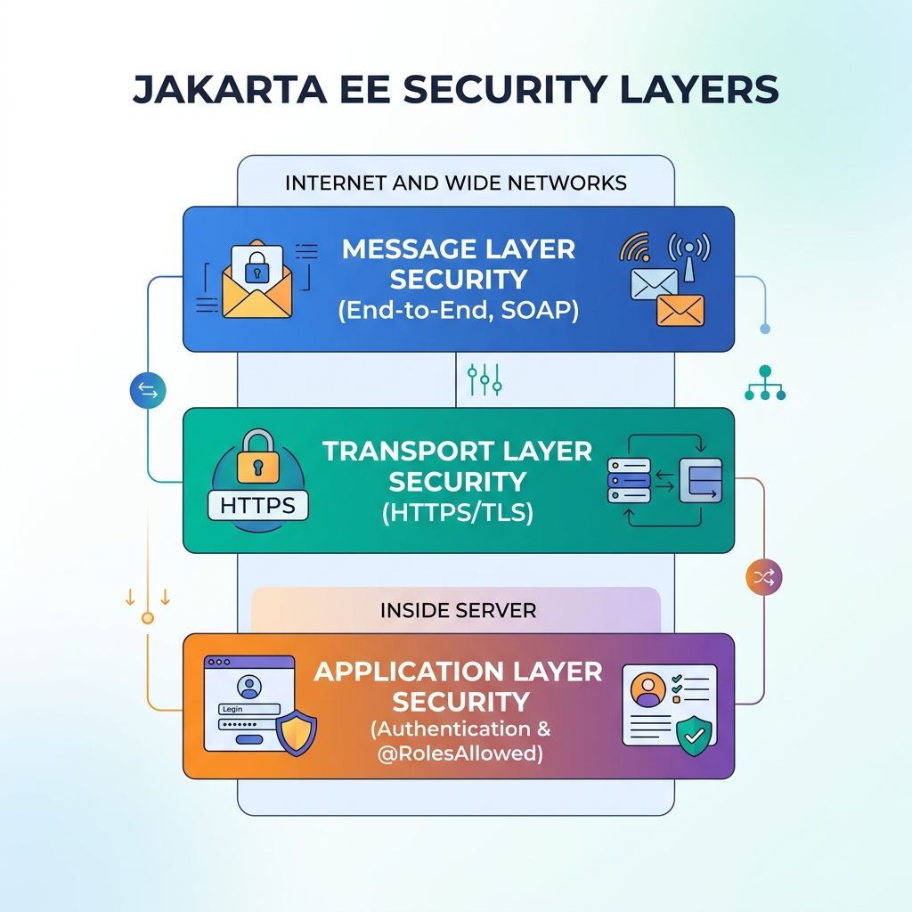

<title>Concurrency & Security</title>
<meta name="description" content="Two users at once (optimistic vs pessimistic locking, @Lock) and who is allowed to do what (@RolesAllowed, the three security layers).">
<link rel="stylesheet" href="assets/css/styles.css">
<script>window.PAGE = "07-concurrency-security";</script>

<main class="page">

  <h1>Unit 07 · Concurrency, locking &amp; security</h1>
  <p class="lede">Two topics that both come from “many people using one system at once”: stopping
    simultaneous updates from corrupting data (<strong>concurrency control</strong>), and controlling
    who’s allowed to call what (<strong>security</strong>).</p>

  <div class="callout"><span class="callout__i">↩︎</span>
    <div class="callout__b"><b>Recap</b> Transactions keep a set of changes all-or-nothing (Unit 06).
      This unit handles what happens when two transactions want the <em>same row</em> at the same
      time.</div>
  </div>

  <span class="eyebrow">concept</span>
  <h2>The lost-update problem</h2>
  <pre><code>User A reads balance -> $1,000        User B reads balance -> $1,000   (same moment)
User A subtracts $800, writes $200
User B subtracts $600, writes $400    &lt;-- WRONG. Should be $200.
The bank just invented $200.</code></pre>
  <p>Two fixes, opposite philosophies.</p>

  <h3>Optimistic locking — “assume no clash, check at the end”</h3>
  <p>Don’t lock anything. Add a <strong>version number</strong> column. When you save, the UPDATE says
    “…WHERE version = 5”. If someone else already bumped it to 6, zero rows match → you get an
    <code>OptimisticLockException</code> and retry.</p>
  <pre><code>@Entity
public class Account {
    @Id private int accountId;
    private double balance;

    @Version                 // JPA manages this counter automatically
    private int version;
}</code></pre>

  <h3>Pessimistic locking — “assume a clash, lock up front”</h3>
  <p>Lock the row the moment you read it; others wait.</p>
  <pre><code>Account acct = em.find(Account.class, id, LockModeType.PESSIMISTIC_WRITE);
// nobody else can read or write this row until our transaction ends</code></pre>

  <div class="tablewrap"><table>
    <thead><tr><th></th><th>Optimistic</th><th>Pessimistic</th></tr></thead>
    <tbody>
      <tr><td>Locks?</td><td>Never (uses <code>@Version</code>)</td><td>Immediately on read</td></tr>
      <tr><td>On clash</td><td>Exception at commit → retry</td><td>Second caller waits</td></tr>
      <tr><td>Best when clashes are…</td><td>Rare (most apps, e-commerce)</td><td>Frequent / data is critical (finance)</td></tr>
      <tr><td>Deadlock risk</td><td>Very low</td><td>Higher</td></tr>
    </tbody>
  </table></div>

  <span class="eyebrow">concept</span>
  <h2><code>@Lock</code> in singleton beans</h2>
  <p>A singleton is one shared instance (Unit 03), so many threads may enter at once. Container-managed
    concurrency (the default) lets you say who’s allowed in together:</p>
  <pre><code>@Singleton
public class ConfigBean {

    private String value = "default";

    @Lock(LockType.WRITE)          // ONE thread at a time — it changes state
    public void set(String v) { this.value = v; }

    @Lock(LockType.READ)           // MANY threads at once — read-only, safe
    public String get() { return value; }
}</code></pre>
  <div class="bench" data-run="canned">
    <div class="bench__head"><span class="dot"></span><span class="kind">try it</span><span class="mode">replay — real server output</span></div>
    <pre class="bench__code"><code>// 2 writers + 3 readers hit the singleton at once
t1 -> set("A")     t2 -> set("B")
t3 -> get()   t4 -> get()   t5 -> get()</code></pre>
    <div class="bench__controls">
      <button class="btn-run" type="button">Run</button>
      <span class="bench__hint">WRITE calls are serialised; READ calls run together once no WRITE holds the lock.</span>
    </div>
    <script type="text/plain" class="bench__canned">
t1 set("A")  [WRITE lock acquired] ... released
t2 set("B")  [waited for t1] [WRITE lock acquired] ... released
t3 get()  [READ lock]  -&gt; "B"   \
t4 get()  [READ lock]  -&gt; "B"    &gt;  all three ran concurrently
t5 get()  [READ lock]  -&gt; "B"   /
    </script>
    <pre class="bench__out" aria-live="polite"></pre>
  </div>
  <p><code>@AccessTimeout(0)</code> = fail immediately if busy; <code>@AccessTimeout(-1)</code> = wait
    forever (dangerous); <code>@AccessTimeout(4000)</code> = wait up to 4 s then throw.</p>

  <span class="eyebrow">concept</span>
  <h2>Security — the three layers</h2>
  <figure>
    
    <figcaption><b>Takeaway:</b> transport security protects the <em>wire</em>; application security
      controls <em>who may call a method</em>; message security protects the <em>payload</em> across
      many hops.</figcaption>
  </figure>

  <div class="tablewrap"><table>
    <thead><tr><th>Layer</th><th>Protects</th><th>How</th></tr></thead>
    <tbody>
      <tr><td><strong>Application</strong></td><td>Who may call which method</td><td>Annotations: <code>@RolesAllowed</code>, <code>@PermitAll</code>, <code>@DenyAll</code> (or <code>ejb-jar.xml</code>)</td></tr>
      <tr><td><strong>Transport</strong></td><td>Data in transit, browser ↔ server</td><td>HTTPS / TLS — encrypts everything on that one hop</td></tr>
      <tr><td><strong>Message</strong></td><td>The message body, end-to-end through relays</td><td>Encryption embedded in the (SOAP) message; can encrypt just the sensitive part</td></tr>
    </tbody>
  </table></div>

  <div class="code-head">Declarative security on a bean</div>
  <pre><code>@Stateless
public class AccountBean implements AccountRemote {

    @PermitAll
    public double publicRate(String ccy) { ... }              // anyone

    @RolesAllowed({"CUSTOMER", "BANK_TELLER"})
    public double getBalance(int accountId) { ... }            // logged-in with a role

    @RolesAllowed("BANK_MANAGER")
    public void approveLargeTransfer(int txId) { ... }         // managers only

    @DenyAll
    public void retiredMethod() { ... }                        // nobody
}</code></pre>
  <p>Need a decision <em>inside</em> the logic? Inject <code>EJBContext</code> and call
    <code>ejbContext.isCallerInRole("BANK_MANAGER")</code> or
    <code>ejbContext.getCallerPrincipal().getName()</code>.</p>

  <span class="eyebrow">concept</span>
  <h2>Lifecycle hooks (bonus)</h2>
  <div class="tablewrap"><table>
    <thead><tr><th>Annotation</th><th>Runs</th></tr></thead>
    <tbody>
      <tr><td><code>@PostConstruct</code></td><td>Just after the container builds the bean and injects its fields — do setup here, not in the constructor.</td></tr>
      <tr><td><code>@PreDestroy</code></td><td>Just before the bean is discarded — close things here.</td></tr>
      <tr><td><code>@PrePassivate</code> / <code>@PostActivate</code></td><td>Stateful beans only — before parking to disk / after coming back.</td></tr>
    </tbody>
  </table></div>

  <span class="eyebrow">check yourself</span>
  <section class="quiz" data-quiz>
    <h3>Check yourself</h3>
    <script type="application/json">
    [
      {"q":"Optimistic locking prevents lost updates by...","opts":["Locking the row on read","Adding a @Version column and failing the UPDATE if the version changed since you read it","Blocking all other users","Copying the database"],"a":1,"why":"No locks held; the version check at commit detects a concurrent change and throws OptimisticLockException."},
      {"q":"Two transactions constantly fight over the same critical row. Which strategy?","opts":["Optimistic — retries are cheap","Pessimistic — make the second one wait instead of failing repeatedly","Neither; remove the transaction","Use @Lock(READ)"],"a":1,"why":"When clashes are frequent, waiting (pessimistic) beats a storm of rollback-and-retry."},
      {"q":"In a @Singleton, which methods get @Lock(READ)?","opts":["Every method","Only methods that change state","Only read-only methods that don't change state","None; @Lock is for stateful beans"],"a":2,"why":"READ lets many threads run together safely. WRITE (one at a time) goes on state-changing methods."},
      {"q":"Which layer encrypts data as it travels from the browser to the server?","opts":["Application layer security","Transport layer security (HTTPS/TLS)","Message layer security","@RolesAllowed"],"a":1,"why":"TLS protects that network hop. Application security is about method access; message security protects the payload across relays."},
      {"q":"A user without the right role calls a @RolesAllowed method. What happens?","opts":["It runs anyway","The container throws EJBAccessException before the method body runs","It returns null","WildFly shuts down"],"a":1,"why":"The container enforces the annotation and rejects the call with EJBAccessException."}
    ]
    </script>
  </section>

  <span class="eyebrow">recap</span>
  <h2>One-line summary</h2>
  <div class="tablewrap summary"><table><tbody>
    <tr><td>Lost update</td><td>Two writers overwrite each other; concurrency control prevents it.</td></tr>
    <tr><td>Optimistic</td><td><code>@Version</code>; no locks; exception + retry on clash. Default choice.</td></tr>
    <tr><td>Pessimistic</td><td>Lock on read; others wait. For frequent clashes / critical data.</td></tr>
    <tr><td>@Lock</td><td>Singleton concurrency: WRITE = one at a time, READ = many together.</td></tr>
    <tr><td>Security layers</td><td>Application (<code>@RolesAllowed</code>) · Transport (HTTPS) · Message (payload).</td></tr>
  </tbody></table></div>

</main>

<script src="assets/js/course.js"></script>
<script src="assets/js/runner.js"></script>
